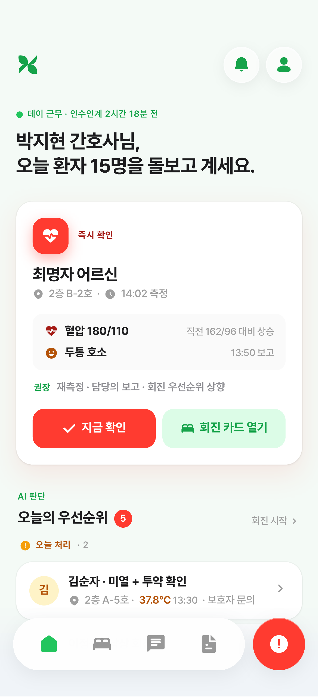

WHY HARU ANBU
면회와 면회 사이,
안부가 비어 있습니다.
가족은 오늘이 궁금하고,
현장은 반복되는 전화 응대가 버겁습니다.
“오늘 식사는 잘하셨을까?”
그 질문에, 기록이 먼저 답합니다.
ONE RECORD. CONNECTED CARE.
요양시설의 하루를 가족의 안부로 전합니다.
한 번의 돌봄 기록이, 네 사람을 연결하는 서비스.

WHY HARU ANBU
가족은 오늘이 궁금하고,
현장은 반복되는 전화 응대가 버겁습니다.
“오늘 식사는 잘하셨을까?”
그 질문에, 기록이 먼저 답합니다.
HOW IT CONNECTS
같은 돌봄 기록을 각자의 역할에 맞는 정보로 정리합니다.
가족에게는 안심을, 현장에는 간결함을.
정보의 깊이와 표현을 역할에 맞춥니다.
01 / FAMILY
홈에서 일일 리포트까지, 가족을 위한 짧고 쉬운 동선.


02 / CAREGIVER
오늘의 업무를 확인하고 바로 체크.
같은 내용을 거듭 전달하는 부담을 줄입니다.
오늘의 업무 → 기록 → 함께 공유

03 / CLINICIAN
현장의 기록을 이어서 확인하고,
어르신의 상태를 맥락 속에서 살핍니다.
상태 확인 → 변화 파악 → 후속 확인


04 / RESIDENT
큰 글자와 분명한 할 일로
오늘의 생활을 스스로 확인합니다.
OUR DESIGN PRINCIPLE
네 사람의 다른 일상을 하나의 돌봄 경험으로 연결합니다.